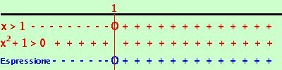

|
risolviamo la disequazione:
Se vado a risolverla senza riflettere, al momento di fare il grafico vedo che un valori che annullano il numeratore mi corrispondono a valori che annullano il denominatore: questo significa che puoi (anzi devi) semplificare numeratore e denominatore prima di poter risolvere, quindi devi tornare all'inizio e semplificare. Per semplificare scomponiamo i fattori cercando di ridurli tutti a fattori di primo grado (quelli che non si riducono non ci debbono preoccupare, possiamo lasciarli come sono, tanto non saranno semplificabili) x2 - 4x + 3 = (x-1)(x - 3) x2 - 4x + 4 = ( x - 2)2 x2 + 1 = non si scompone x2 - 5x + 6 = (x - 2)(x - 3) Quindi la mia disequazione iniziale diventa
(x - 1) (x2 + 1) E' un prodotto, pongo ogni fattore maggiore od uguale a zero x2 + 1
sempre verificata  Riporto su un grafico, evidenziando con un piu' dove la singola disequazione e' verificata e con un meno dove non e' verificata Dove il valore che annulla e' accettabile lo indico con un cerchietto Nella riga in blu metto il segno dell'espressione Ora faccio il calcolo dei segni: siccome devo prendere dove l'espressione e' positiva o nulla l'espressione sara' positiva dove il prodotto dei segni dei fattori da' risultato positivo e sara' nulla dove si annullano i fattori (i cerchietti) La soluzione e' x |